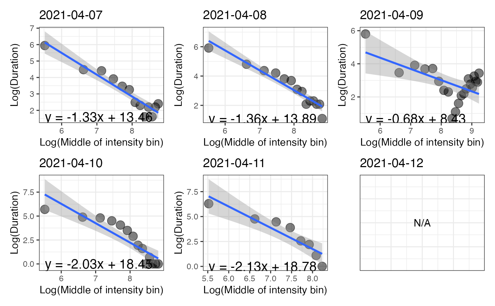
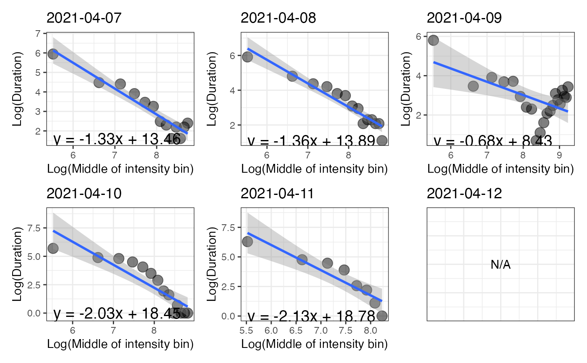

Compute intensity distribution metrics
Source:R/compute_intensity_distri_metrics.R
compute_intensity_distri_metrics.RdThis function computes metrics that describe the distribution of intensity for each day of a dataset. Computations are performed based on the daily periods set for analysis and on the detected wear time.
Usage
compute_intensity_distri_metrics(
data,
col_axis = "vm",
col_time = "time",
valid_wear_time_start = "00:00:00",
valid_wear_time_end = "23:59:59",
start_first_bin = 0,
start_last_bin = 10000,
bin_width = 500
)Arguments
- data
A dataframe obtained using the
prepare_dataset,mark_wear_time, and then themark_intensityfunctions.- col_axis
A character value to indicate the name of the variable to be used to compute total time per bin of intensity.
- col_time
A character value to indicate the name of the variable to be used to determine the epoch length of the dataset.
- valid_wear_time_start
A character value with the HH:MM:SS format to set the start of the daily period that will be considered for computing metrics.
- valid_wear_time_end
A character value with the HH:MM:SS format to set the end of the daily period that will be considered for computing metrics.
- start_first_bin
A numeric value to set the lower bound of the first bin of the intensity band (in counts/epoch duration).
- start_last_bin
A numeric value to set the lower bound of the last bin of the intensity band (in counts/epoch duration).
- bin_width
A numeric value to set the width of the bins of the intensity band (in counts/epoch duration).
Value
A list of objects: metrics, p_band, and p_log. metrics is a dataframe containing
the intensity gradients and the MX metrics (in counts/epoch duration used) as described in Rowlands et al. (2018; doi:10.1249/MSS.0000000000001561).
The graphic p_band shows the distribution of time spent in the configured bins of intensity for each day of the dataset.
The graphic p_log shows, for each day, the relationship between the natural log of time spent in each bin with the natural
log of the middle values of the intensity bins.
Examples
# \donttest{
file <- system.file("extdata", "acc.agd", package = "activAnalyzer")
mydata <- prepare_dataset(data = file)
mydata_with_wear_marks <- mark_wear_time(
dataset = mydata,
TS = "TimeStamp",
to_epoch = 60,
cts = "vm",
frame = 90,
allowanceFrame = 2,
streamFrame = 30
)
#> frame is 90
#> streamFrame is 30
#> allowanceFrame is 2
mydata_with_intensity_marks <- mark_intensity(
data = mydata_with_wear_marks,
col_axis = "vm",
equation = "Sasaki et al. (2011) [Adults]",
sed_cutpoint = 200,
mpa_cutpoint = 2690,
vpa_cutpoint = 6167,
age = 32,
weight = 67,
sex = "male"
)
#> You have computed intensity metrics with the mark_intensity() function using the following inputs:
#> axis = vm
#> sed_cutpoint = 200 counts/min
#> mpa_cutpoint = 2690 counts/min
#> vpa_cutpoint = 6167 counts/min
#> equation = Sasaki et al. (2011) [Adults]
#> age = 32
#> weight = 67
#> sex = male
compute_intensity_distri_metrics(
data = mydata_with_intensity_marks,
col_axis = "vm",
col_time = "time",
valid_wear_time_start = "00:00:00",
valid_wear_time_end = "23:59:59",
start_first_bin = 0,
start_last_bin = 10000,
bin_width = 500
)
#> Joining with `by = join_by(date)`
#> $metrics
#> date ig M1/3 M120 M60 M30 M15 M5
#> 1 2021-04-07 -1.33 80.33 1998.67 3054.71 4721.17 5828.83 6160.10
#> 2 2021-04-08 -1.36 323.79 2619.29 3671.61 4944.65 5763.85 6385.89
#> 3 2021-04-09 -0.68 66.66 7560.33 9226.30 10066.52 10999.13 12113.34
#> 4 2021-04-10 -2.03 477.97 2063.99 2612.85 3196.95 3603.35 5263.99
#> 5 2021-04-11 -2.13 200.89 1202.82 1635.32 1963.83 2458.20 2870.01
#> 6 2021-04-12 NA NA NA NA NA NA NA
#>
#> $p_band
 #>
#> $p_log
#> `geom_smooth()` using formula = 'y ~ x'
#> `geom_smooth()` using formula = 'y ~ x'
#> `geom_smooth()` using formula = 'y ~ x'
#> `geom_smooth()` using formula = 'y ~ x'
#> `geom_smooth()` using formula = 'y ~ x'

#>
# }
#>
#> $p_log
#> `geom_smooth()` using formula = 'y ~ x'
#> `geom_smooth()` using formula = 'y ~ x'
#> `geom_smooth()` using formula = 'y ~ x'
#> `geom_smooth()` using formula = 'y ~ x'
#> `geom_smooth()` using formula = 'y ~ x'

#>
# }